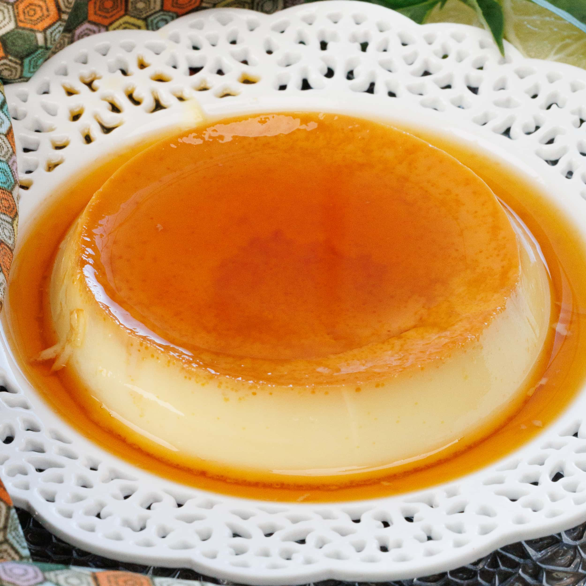

Neapolitan Flan

Description
A recipe for a mean neapolitan flan. Mexicans can't take the credit for this but we eat it very often and it is the best thing to have after some street tacos.
Ingredients
- 1 can condensed milk (if you have access to La Lechera, use that).
- 1 can evaporated milk (if you have access to Carnation, go with THAT).
- 5 eggs.
- 2 tablespoons of vanilla essence.
- Half a cup of caster sugar.
Steps
- Add sugar to a pot and caramelize. Once it's able to flow, let it cool.
- Blend the rest of the ingredients and add mix to the pot with the caramel.
- Preheat oven at 180 degrees celsius.
- Set up a water bath for the flan and put it in the oven. Bake for an hour.